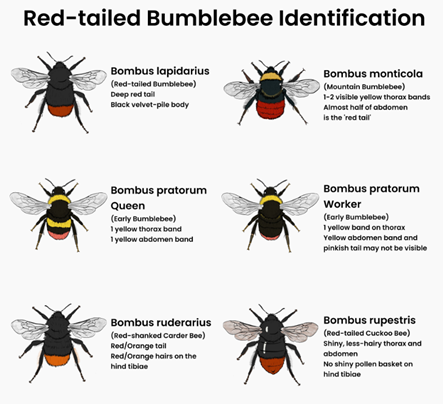
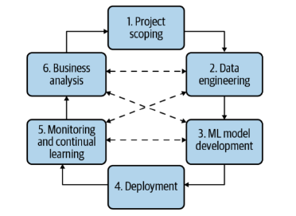
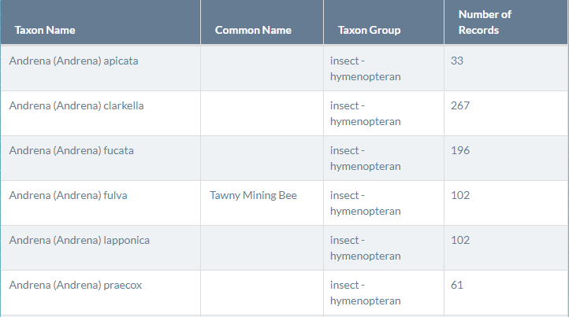

Introduction
More than half of Ireland’s bee species have undergone substantial declines in their numbers since 1980. With 30% of the Irish species threatened with extinction and 6 out of 21 bumblebee species are listed as endangered or vulnerable.
In response to this decline, the National Biodiversity Data Centre (NBDC) launched the ‘The All-Ireland Pollinator Plan’ aimed specifically at increasing bee numbers in Ireland. The NBDC aims to help drive pollinator conservation through better data. It is entirely reliant on the generosity of volunteer recorders who get involved and submit data on Ireland’s bees.
Volunteers submit sightings via an online portal and have the option to email beforehand a photograph for validation before submitting the record. NBDC also offer courses for volunteers to identify bee species themselves when submitting sightings. However, this interface has affordance issues. Volunteers must access a separate web portal, identify the species themselves based on learned knowledge and submit an image and location. Example of identifying varying red-tailed bumblebees in figure 1 below.

Figure 1. Identifying by eye varying red-tailed bees (Bees & Wasps of Ireland, 2022).
To reduce the risk of misidentification of bee species by volunteers, will develop a web app app using streamlit that will use a convoluted neural network, trained on already labelled data to classify uploaded images of bees.
Objective:
- Reduce record errors by incorporating an image classifier trained to identify bees.
In order to create an app that meets the objective above, will use an iterative process to develop the developing the machine learning system in production (Huyen, 2020). The following section will go through each step-in detail and subheadings will refer to each step of the iterative process illustrated in figure 2 below.

Figure 2. Iterative process of development (Huyen, 2020).
1. Project Scoping
skip
2. Data Engineering
In order to train the image classifier will first need a labelled dataset. Luckily the NBDC have a large bee species dataset available which itself was collated from a network of scientific NGO’s aimed at providing open source data here
The dataset contains 99 bee species which will be used to train a multi-label classification model. However, the dataset classes are highly imbalanced. For example, honeybees have over 600,000 images present in the dataset while some solitary bee species only have 10-15 images.
We simple go through each bee species name, click the link and download the files manually.

Figure 3. Website contaning bee data.
Next will need to unzip each folder, convert text files to csv and dowload the image URLs.
import urllib.request
import os
import pandas as pd
import re
import csv
# optinal (Windows ppup alerting when download finished)
import time
from plyer import notificationManually paste bee species from list.
beeName = "Andrena stragulata"
with open(r"C:\Users\Cian\Documents\Bee_Images\{}".format(beeName)+"\multimedia.txt",encoding="utf8") as file:
for line in file:
urls = re.findall('(https?://[^\s]+?\.jpg)', line) # extract all urls which have .jpg
#print([x for x in urls if x])
Urls_img.append([x for x in urls if x])Lets check how many are downloaded per bee species (i.e., Andrena stragulata).
length_list = len(Urls_img)
print("the num of elem stored is", length_list) Remove any blanks (findall method returns a lot of empty lists).
res = [ele for ele in Urls_img if ele != []]Check final number of bee URLs stored in the list, after removing blanks.
length_list = len(res)
print("the num of elem stored is", length_list) Output for Andrena stragulata is:
the num of elem stored is 2An optional Excel trick I used is below. If there is a large number of images (ie.., Honeybee) in Excel (“Go To” menu) and in the Reference section type the address of the range I want to select. For instance, to select the first 100,000 rows, type 1:100000
print("1:",length_list/3) # used if very large, can split up in Excel ie: 'cell 1:50000'Next, will convert this list of bee image URLs into a CSV file:
with open("{}".format(beeName)+".csv", 'w', encoding='UTF8', newline='') as f:
writer = csv.writer(f)
# write multiple rows
writer.writerows(res)
Then will make a folder
dir = os.path.join(r"C:\Users\Cian\Documents\Dataset_Bees\{}".format(beeName))
if not os.path.exists(dir):
os.mkdir(dir)We can also make a sub-folder, for naming files. This is a bot of a round-about-way but how it’s hopw I worked it out for this project.
dir = os.path.join(r"C:\Users\Cian\Documents\Dataset_Bees\{}".format(beeName)+"\data")
if not os.path.exists(dir):
os.mkdir(dir)These next two variables point to where the CSV file of image URL is stored where store the downloaded images
URL_PATH = (r"C:\Users\Cian\Documents\Test_Bee_Images\{}".format(beeName)+".csv")
IMAGE_PATH = (r"C:\Users\Cian\Documents\Dataset_Bees\{}".format(beeName)+"\data") So for example print(IMAGE_PATH) will output:
C:\Users\Cian\Documents\Dataset_Bees\Andrena stragulata\dataFinally, we now run this method below to start downloading the images, depending on how many are stored in the list this can take a long time.
def url_jpg(URL_PATH, IMAGE_PATH):
URLS = pd.read_csv(URL_PATH)
url = []
for i in enumerate(URLS.values):
links = i[1][0]
url.append(links)
for j in range(len(url)):
fileName = ('image{}.jpg'.format(j))
imagePath = ('{}{}'.format(IMAGE_PATH, fileName))
try:
urllib.request.urlretrieve(url[j], imagePath)
print('{} saved.'.format(fileName))
except:
pass
notification.notify(
title = "Install complete",
message = "{}".format(beeName),
timeout = 10
)
Remember, to run a method stored in a jupyter cell, we have to call it in a seperate cell such as: python url_jpg(URL_PATH, IMAGE_PATH)